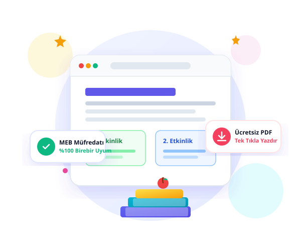

Geleceğin Minik Mucitleri İçin Özgün Eğitim Materyalleri
1, 2, 3 ve 4. sınıflar için MEB müfredatına %100 uyumlu, alanında uzman sınıf öğretmenleri tarafından özenle tasarlanmış binlerce ücretsiz çalışma kâğıdı, test ve etkinlik.

Sınıfınızı Seçin, Hızla Keşfedin
Her sınıf düzeyinin bilişsel ve pedagojik gelişim ihtiyaçlarına göre özel olarak gruplandırılmış ders arşivimiz.
1. Sınıf
Okuma-yazma hazırlığı, ses grupları, hece çalışmaları ve temel ritmik saymalar.
1. Sınıfı Keşfet →2. Sınıf
Akıcı okuma anlama metinleri, çarpım tablosu temelleri ve Hayat Bilgisi etkinlikleri.
2. Sınıfı Keşfet →3. Sınıf
Gezegenimiz, kuvvet ve hareket, bölme-çarpma problemleri ve Türkçe dil bilgisi.
3. Sınıfı Keşfet →4. Sınıf
Ortaokula hazırlık, kesirler, sosyal bilgiler temaları, İngilizce ve deneme sınavları.
4. Sınıfı Keşfet →Haftanın En Çok İndirilen Materyalleri
Sınıf düzeyine göre anında filtreleyin, detayları önizleyin ve tek tıkla yüksek kalitede PDF olarak indirin.
Neden İlkokul Atölyesi?
Geleneksel, reklam dolu ve karmaşık sitelerin aksine modern, hızlı ve temiz bir kullanıcı deneyimi sunuyoruz.
%100 MEB Müfredat Uyumu
Tüm çalışma kâğıtları ve fasiküller Milli Eğitim Bakanlığı güncel kazanım çizelgeleriyle birebir uyumlu olarak üretilir.
Kolay & Hızlı Yazdırma
A4 formatına tam oturan, net kenar boşluklarına sahip yüksek çözünürlüklü vektörel PDF dosyaları.
Reklamsız & Güvenli Ortam
Öğrencilerin ve öğretmenlerin dikkatini dağıtan yanıltıcı indirme butonları ya da rahatsız edici reklamlar barındırmaz.
Öğretmenler Tarafından Tasarlandı
Sınıf ortamında denenmiş, öğrencilerin ilgi ve motivasyonunu kanıtlanmış pedagojik yöntemlerle hazırlanmıştır.
Eğitimciler ve Veliler Ne Diyor?
Her gün binlerce sınıf öğretmeninin ve velinin ders içi ve ev çalışmalarında bizi tercih etmesinin sebebi.
"1. sınıf okuma-yazma sürecinde çizgi ve hece kâğıtları sınıfımda adeta can simidi oldu. Çizimlerin netliği ve çocukların ilgisini çeken tasarımı harika!"
"Özellikle 2. ve 3. sınıf matematik problemlerinde görsellikle matematiği birleştiren yapıyı çok takdir ettim. Sayfa düzeni asla karmaşık değil, tek tıkla yazdırabiliyorum."
"Oğlum 4. sınıfa gidiyor. Hafta sonu tekrar çalışmaları için hazırlanan fasiküller okul derslerine inanılmaz destek sağladı. Emeği geçen tüm öğretmenlerimize teşekkürler."